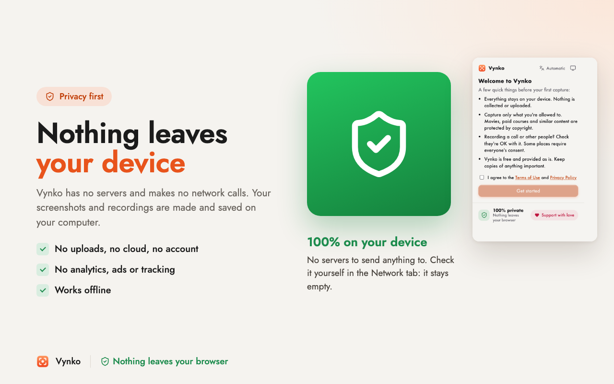

Chrome, Edge-க்கான இலவச ஸ்கிரீன் ரெக்கார்டர் மற்றும் ஸ்கிரீன்ஷாட் கருவி
Vynko முழுப் பக்க ஸ்கிரீன்ஷாட்களை எடுக்கும், உங்கள் திரையை ஒலி, மைக்ரோஃபோன், வெப்கேமுடன் பதிவுசெய்யும். வீடியோவை பிரவுசரிலேயே எடிட் செய்யலாம்: தவறுகளை வெட்டி எடுக்கலாம், இசையோ லோகோவோ சேர்க்கலாம், வெப்கேமை விரும்பிய இடத்துக்கு நகர்த்தலாம். தனிப்பட்ட விவரங்களை மங்கலாக்கலாம், ஸ்கிரீன்ஷாட்களில் குறிப்புகள் சேர்க்கலாம். இது இலவசம், வாட்டர்மார்க் இல்லை, பதிவுசெய்யத் தேவையில்லை, எந்த நெட்வொர்க் அழைப்பும் செய்வதில்லை, அதனால் நீங்கள் எடுக்கும் எதுவும் உங்கள் சாதனத்தை விட்டு வெளியே போகாது.
Chrome-இல் சேர்க்கவும், இலவசம் பயன்படுத்துவது எப்படிWindows, Mac, Linux, Chromebook-இல் Google Chrome, Microsoft Edge மற்றும் பிற Chromium பிரவுசர்களில் வேலை செய்யும். 30 மொழிகளில் கிடைக்கிறது.
ஸ்கிரீன்ஷாட்
பதிவுசெய்

Vynko என்ன செய்யும்
- முழுப் பக்க ஸ்கிரீன்ஷாட்முழுப் பக்கத்தையும் ஸ்க்ரோல் செய்து ஒன்றாக இணைக்கும். தாமதமாக ஏறும் படங்களும், Gmail, Slack போல உள்ளே ஒரு பேனலை ஸ்க்ரோல் செய்யும் ஆப்களும் இதில் அடங்கும்.
- எந்த ஸ்கிரீன்ஷாட்டும்தெரியும் பகுதி, தேர்ந்தெடுத்த பகுதி, வேறொரு சாளரம் அல்லது முழுத் திரை. PNG, JPG அல்லது WebP.
- ஸ்கிரீன் ரெக்கார்டர்ஒரு தாவல், தாவலின் ஒரு பகுதி, எந்தச் சாளரமும் அல்லது முழுத் திரையையும் 720p, 1080p அல்லது 4K-இல் பதிவுசெய்யுங்கள்.
- ஒலி, மைக், வெப்கேம்தாவல் ஒலி, நேரடி நிலைக் காட்டியுடன் உங்கள் குரல், நீங்கள் தேர்ந்தெடுக்கும் மூலையில் வட்டமான வெப்கேம் குமிழ்.
- வீடியோ எடிட்டர்பதிவின் எந்தப் பகுதியையும் ஃப்ரேம் வரை தேர்ந்தெடுத்து, அதை வெட்டி எடுக்கலாம், முடக்கலாம், அல்லது அந்தப் பகுதிக்கு மட்டும் இசையோ படமோ சேர்க்கலாம்.
- தனி லேயரில் வெப்கேம்பதிவுக்குப் பிறகு வெப்கேமை எங்கு வேண்டுமானாலும் இழுக்கலாம், அளவை மாற்றலாம், அல்லது நீக்கலாம்.
- லேயர்கள், இசைமேலே ஒரு லோகோ, புகைப்படம் அல்லது இரண்டாவது வீடியோ வைக்கலாம், பின்னணி இசை சேர்க்கலாம், எதையும் Undo செய்யலாம்.
- அசல் பதிவு எப்போதும் உண்டுஎவ்வளவு எடிட் செய்தாலும், அசலைச் சேமி தொடப்படாத பதிவையும், வெப்கேமைத் தனிக் கோப்பாகவும் தரும்.
- GIF மேக்கர்நேரடியாக GIF ஆகப் பதிவுசெய்யுங்கள், அல்லது வீடியோவை அளவு மதிப்பீட்டுடன் சிறிய, நடுத்தர அல்லது பெரிய GIF ஆக மாற்றுங்கள்.
- குறிப்புகள்அம்புகள், பெட்டிகள், வட்டங்கள், உரை, ஹைலைட்டர், எண்ணிட்ட படிகள், ஸ்டிக்கர்கள், கிராப்.
- தனிப்பட்ட தகவலை மறைஎதையும் கையால் மங்கலாக்கலாம், அல்லது பக்கத்தில் உள்ள எல்லா மின்னஞ்சல்களையும் தொலைபேசி எண்களையும் ஒரே கிளிக்கில் மங்கலாக்கலாம்.
- டைமர்கேப்சருக்கு முன் ஒரு மெனுவைத் திறக்க 3, 5 அல்லது 10 வினாடிகள் காத்திருக்கும்.
- உங்கள் கோப்புப் பெயர்கள்பக்கத் தலைப்பு, தளம், தேதி, நேரம் கொண்டு கோப்புகளுக்குப் பெயரிட்டு, நீங்கள் விரும்பும் கோப்புறையில் சேமிக்கலாம்.
Vynko-வைப் பயன்படுத்துவது எப்படி
Chrome-இல் முழுப் பக்க ஸ்கிரீன்ஷாட் எடுப்பது எப்படி
- Chrome Web Store-இலிருந்து Vynko-வைச் சேர்த்து, டூல்பாரில் பின் செய்யுங்கள்.
- பக்கத்தைத் திறந்து, Vynko ஐகானைக் கிளிக் செய்து முழுப் பக்கம் என்பதைத் தேர்ந்தெடுங்கள், அல்லது Alt+Shift+F அழுத்துங்கள்.
- Vynko பக்கத்தை ஸ்க்ரோல் செய்து, ஒட்டியிருக்கும் தலைப்புப் பட்டைகள் மீண்டும் மீண்டும் வராமல் மறைத்து, முடிவை எடிட்டரில் திறக்கும். பதிவிறக்கு அல்லது நகலெடு கிளிக் செய்யுங்கள்.

Chrome-இல் ஆடியோவுடன் திரையைப் பதிவு செய்வது எப்படி
- Vynko ஐகானைக் கிளிக் செய்து பதிவுசெய் என்பதைத் திறங்கள்.
- இந்தத் தாவலை அதன் ஒலியுடன் பதிவுசெய்ய தாவல், அதன் ஒரு பகுதிக்கு பகுதி, எந்தச் சாளரத்துக்கும் அல்லது முழுத் திரைக்கும் தேர்வு என்பதைத் தேர்ந்தெடுங்கள்.
- உங்கள் குரலைச் சேர்க்க மைக்ரோஃபோன், கேமரா குமிழைச் சேர்க்க வெப்கேம் இயக்குங்கள். அது தொடங்கும் மூலையையும் அளவையும் தேர்ந்தெடுங்கள்.
- ஐகானை மீண்டும் கிளிக் செய்து நிறுத்து அழுத்துங்கள். வீடியோ எடிட்டரில் திறக்கும், எடிட் செய்து MP4 அல்லது WebM ஆகப் பதிவிறக்கத் தயாராக இருக்கும்.
திரையை GIF ஆகப் பதிவு செய்வது எப்படி
பதிவுசெய் என்பதில் வடிவத்தை GIF என அமைத்து வழக்கம் போல் பதிவுசெய்யுங்கள். அல்லது வீடியோவாகப் பதிவுசெய்து, எடிட்டரில் GIF கிளிக் செய்து சிறியது (480 px), நடுத்தரம் (640 px) அல்லது பெரியது (960 px) என்பதைத் தேர்ந்தெடுங்கள். சேமிப்பதற்கு முன் ஒவ்வொரு அளவுக்கும் தோராயமான கோப்பு அளவு காட்டப்படும்.
திரைப் பதிவை டிரிம் செய்வது, வெட்டுவது அல்லது எடிட் செய்வது எப்படி
- ஒரு பகுதியைத் தேர்ந்தெடுக்க கிளிப்களின் மேல் அல்லது அவற்றுக்கு மேலே உள்ள மெல்லிய அளவுகோலின் மேல் இழுங்கள். அல்லது அது தொடங்கும் இடத்தில் [, முடியும் இடத்தில் ] அழுத்துங்கள். ,, . ஒரு நேரத்தில் ஒரு ஃப்ரேம் நகர்த்தும்.
- நீக்க வெட்டி எடு, ஒலியை நிறுத்த முடக்கு, அந்தப் பகுதிக்கு மட்டும் ஒரு பாடல், லோகோ அல்லது இரண்டாவது வீடியோ வைக்க இங்கே இசை சேர், இங்கே அடுக்கு சேர் கிளிக் செய்யுங்கள்.
- ஒரு கிளிப்பை இரண்டாகப் பிரிக்க S அழுத்துங்கள், லேயர்களை இடத்தில் வைக்க முன்னோட்டத்தில் இழுங்கள், எதையும் Ctrl+Z மூலம் Undo செய்யுங்கள்.
- பதிவிறக்கு கிளிக் செய்யுங்கள். உங்கள் மாற்றங்கள் இல்லாத பதிவு வேண்டுமென்றால் அசலைச் சேமி எப்போதும் இருக்கும்.

வெப்கேமை நகர்த்துவது, அளவை மாற்றுவது அல்லது நீக்குவது எப்படி
Vynko உங்கள் வெப்கேமை வீடியோவுக்குள் பதிக்காமல் தனி லேயராகப் பதிவுசெய்கிறது. எடிட்டரில் முன்னோட்டத்தில் உள்ள வட்டமான வெப்கேமைக் கிளிக் செய்யுங்கள். நகர்த்த அதை இழுங்கள், பெரிதாக்கவோ சிறிதாக்கவோ அதன் மூலையை இழுங்கள், அல்லது நீக்க லேயரை நீக்கு கிளிக் செய்யுங்கள். சேமிப்பதற்கு முன் எடிட்டிங்கை அணைத்தால், அல்லது GIF பதிவுசெய்தால், நீங்கள் தேர்ந்தெடுத்த மூலையில் வெப்கேம் வீடியோவுக்குள் வரையப்படும்.

வேறொரு சாளரத்தையோ முழுத் திரையையோ ஸ்கிரீன்ஷாட் எடுப்பது எப்படி
ஸ்கிரீன்ஷாட் என்பதில் சாளரம் என்பதைத் தேர்ந்தெடுத்து, உங்கள் பிரவுசரின் பகிர்வுப் பெட்டியில் சாளரத்தையோ திரையையோ தேர்ந்தெடுங்கள். படம் எடிட்டரில் திறக்கும்.
ஸ்கிரீன்ஷாட்டில் மின்னஞ்சல்களையும் தொலைபேசி எண்களையும் மங்கலாக்குவது எப்படி
ஒரு ஸ்கிரீன்ஷாட் எடுங்கள். பக்கத்தில் மின்னஞ்சல்களோ தொலைபேசி எண்களோ இருந்தால், எடிட்டர் தனிப்பட்ட தகவலை மறை என்பதைக் காட்டும். ஒரே கிளிக்கில் அவை அனைத்தும் மறைக்கப்படும். பெயர்கள், கீகள், கார்டு எண்கள் போன்ற வேறு எதன் மேலும் மங்கலாக்கு கருவியை இழுத்தும் மறைக்கலாம்.

கீபோர்டு ஷார்ட்கட்கள்
| செயல் | Windows, Linux, ChromeOS | Mac |
|---|---|---|
| தெரியும் பகுதியை ஸ்கிரீன்ஷாட் எடு | Alt+Shift+V | Option+Shift+V |
| முழுப் பக்க ஸ்கிரீன்ஷாட் | Alt+Shift+F | Option+Shift+F |
| தேர்ந்தெடுத்த பகுதியை ஸ்கிரீன்ஷாட் எடு | Alt+Shift+A | Option+Shift+A |
| தாவல் பதிவைத் தொடங்கு அல்லது நிறுத்து | Alt+Shift+R | Option+Shift+R |
இவற்றை chrome://extensions/shortcuts என்ற இடத்தில் மாற்றலாம்.
வடிவமைப்பிலேயே தனியுரிமை
Vynko-வுக்காக நான் எந்த சர்வரையும் இயக்குவதில்லை, அதனால் உங்கள் தரவு போவதற்கு இடமே இல்லை. எக்ஸ்டென்ஷனில் அனலிட்டிக்ஸ், விளம்பரங்கள், டிராக்கிங் எதுவும் இல்லை, இணையத்திலிருந்து எந்த நிரலையும் ஏற்றுவதில்லை. இது எந்த host permissions-ஐயும் கேட்பதில்லை, இதன் content security policy உள்ளூர் blob, data URL-களுக்கான இணைப்புகளை மட்டுமே அனுமதிக்கிறது. உங்கள் வெப்கேமும் மைக்ரோஃபோனும் நீங்கள் சேமிக்கும் பதிவுக்குள் மட்டுமே போகும்.
Vynko எந்த நெட்வொர்க் அழைப்பையும் செய்வதில்லை. ஸ்கிரீன்ஷாட்கள், பதிவுகள், எடிட்கள் எல்லாம் உங்கள் கணினியிலேயே நடக்கின்றன, ஆஃப்லைனிலும் வேலை செய்யும்.
நீங்களே சரிபாருங்கள்: Vynko பாப்அப்பில் வலது கிளிக் செய்து Inspect என்பதைத் தேர்ந்தெடுத்து, Network தாவலைத் திறந்து, ஒரு ஸ்கிரீன்ஷாட் எடுத்து ஒரு கிளிப்பைப் பதிவுசெய்யுங்கள். Network தாவல் காலியாகவே இருக்கும்.

முழு தனியுரிமைக் கொள்கையையும் விதிமுறைகளையும் படியுங்கள்.
Vynko மற்றவற்றுடன் ஒப்பிடும்போது
| Vynko | வழக்கமான இலவச ஸ்கிரீன் ரெக்கார்டர்கள் | |
|---|---|---|
| விலை | இலவசம், கட்டணத் திட்டம் இல்லை | வரம்புகளுடன் இலவசத் திட்டம் |
| வாட்டர்மார்க் | ஒருபோதும் இல்லை | இலவசத் திட்டங்களில் அடிக்கடி உண்டு |
| கணக்கு | தேவையில்லை | பொதுவாகத் தேவை |
| கோப்புகள் எங்கே போகும் | உங்கள் சாதனத்தில் மட்டும் | பெரும்பாலும் நிறுவனத்தின் கிளவுடில் பதிவேற்றப்படும் |
| நேர வரம்பு | இல்லை | பெரும்பாலும் 5 முதல் 15 நிமிடங்கள் |
| வீடியோ எடிட்டிங் | உள்ளேயே உண்டு, உங்கள் சாதனத்தில் | பெரும்பாலும் ஆன்லைன் அல்லது கட்டணம் |
| நெட்வொர்க் அழைப்புகள் | இல்லை | பதிவேற்றங்கள், அனலிட்டிக்ஸ், கணக்கு ஒத்திசைவு |
கேள்விகள்
Vynko உண்மையிலேயே இலவசமா, வாட்டர்மார்க் இல்லாமலா?
ஆம். விளம்பரம் இல்லை, வாட்டர்மார்க் இல்லை, நேர வரம்பு இல்லை, கட்டணத் திட்டம் இல்லை. இது உங்கள் நேரத்தை மிச்சப்படுத்தினால், விருப்பப்பட்டால் நன்கொடை அளிக்க ஒரு இணைப்பு உள்ளது.
Vynko என் பதிவுகளையோ ஸ்கிரீன்ஷாட்களையோ பதிவேற்றுமா?
இல்லை. கேப்சர்கள் உங்கள் பிரவுசரிலேயே உருவாக்கப்பட்டு உங்கள் சாதனத்தில் சேமிக்கப்படும்.
கணக்கு தேவையா?
தேவையில்லை. பதிவுசெய்தலும் இல்லை, உள்நுழைவும் இல்லை.
சிஸ்டம் ஒலியைப் பதிவுசெய்ய முடியுமா?
தாவல் பதிவுகளில் அந்தத் தாவலின் ஒலி சேரும். தேர்வு மூலம் ஒரு சாளரத்தையோ திரையையோ தேர்ந்தெடுக்கும்போது, Windows, ChromeOS-இல் பிரவுசரின் பகிர்வுப் பெட்டி சிஸ்டம் ஒலியையும் சேர்க்க வாய்ப்பு தரும். Mac-இல் தாவல் ஒலியையும் உங்கள் மைக்ரோஃபோனையும் மட்டுமே பதிவுசெய்ய முடியும்.
திரையுடன் சேர்த்து என் வெப்கேமையும் பதிவுசெய்ய முடியுமா?
முடியும். பதிவுசெய் தாவலில் வெப்கேமை இயக்கி, அது தொடங்கும் மூலையையும் அளவையும் தேர்ந்தெடுங்கள். வெப்கேம் தனி லேயர், அதனால் எடிட்டரில் அதை எங்கு வேண்டுமானாலும் இழுக்கலாம், அளவை மாற்றலாம், அல்லது நீக்கலாம்.
வீடியோவின் ஒரு பகுதியை மட்டும் எடிட் செய்ய முடியுமா?
முடியும். டைம்லைனில் இழுத்து ஒரு பகுதியைத் தேர்ந்தெடுங்கள், ஒரே ஒரு ஃப்ரேம் வரை. பிறகு அதை வெட்டி எடுக்கலாம், முடக்கலாம், அல்லது அந்தப் பகுதிக்கு மட்டும் இசையோ படமோ சேர்க்கலாம்.
எடிட் செய்த பிறகும் அசல் பதிவைப் பெற முடியுமா?
முடியும். அசலைச் சேமி எடிட்டரில் எப்போதும் இருக்கும். அது பதிவை இருந்தபடியே பதிவிறக்கும், கூடவே வெப்கேமைத் தனிக் கோப்பாகவும் தரும்.
என் கோப்புகள் எங்கே சேமிக்கப்படும்?
உங்கள் Downloads கோப்புறையில், அல்லது அமைப்புகளில் நீங்கள் தேர்ந்தெடுக்கும் அதற்குள் உள்ள ஒரு கோப்புறையில்.
ஆஃப்லைனில் வேலை செய்யுமா?
செய்யும். அதற்குத் தேவையான அனைத்தும் எக்ஸ்டென்ஷனுக்குள்ளேயே உள்ளன.
Microsoft Edge-இல் வேலை செய்யுமா?
செய்யும். Vynko Chrome, Edge மற்றும் பிற Chromium பிரவுசர்களில் வேலை செய்யும்.
பிழையைப் புகாரளிப்பது அல்லது புதிய வசதியைக் கேட்பது எப்படி?
mishravinay112@gmail.com என்ற முகவரிக்கு மின்னஞ்சல் அனுப்புங்கள்.